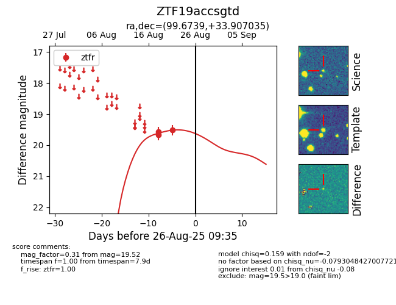

Target ZTF19accsgtd at 2025-08-26 09:35, see:
FINK: fink-portal.org/ZTF19accsgtd
Lasair: lasair-ztf.lsst.ac.uk/objects/ZTF19accsgtd
ALeRCE: alerce.online/object/ZTF19accsgtd
alt names
ZTF19accsgtd (ztf,fink)
coordinates:
equatorial (ra, dec) = (99.6739,+33.90704)
galactic (l, b) = (180.9467,+12.31713)
photometry
last ztfr=19.52
3 ztfr detections
